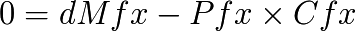
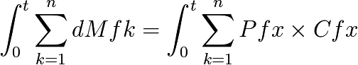

Sur la Théorie Quantitative de la Monnaie
La définition générale du champ de valeur permet de retrouver des résultats économiques classiques aux limites. Soit en effet l’équation fondamentale du champ de valeur :

Dans le cas d’une économie pseudo-isolée en équilibre e à création monétaire locale nulle, nous avons alors :

Ou encore :

Le long d’une ligne d’échange circulaire, nous avons donc en faisant un tour complet, pendant un temps t :

Ce qui, sous contrainte de production inchangée, de stabilité des prix, et pour un temps suffisamment court où la production est semblable et où les producteurs ne sont pas remplacés par la génération suivante, nous donne le résultat de la théorie quantitative de la monnaie :

Où V = t = nombre de cycles complets d’échanges monétisés.
{kind=link}
Lignes circulaires des échanges de valeurs et de monnaie (Luc Fievet TRM 2.0)
Qui est donc une égalité ne concernant que des quantités intégrales globales. Ce résultat ne tient pas compte des fluctuations locales du repère spatio-temporel, et n’est valable qu’au sein d’une économie pseudo-isolée, pour un temps court où les changements tant productifs, qu’individuels ou monétaires sont négligeables.
Le biais d’une vision uniquement globale, est la non-relativité de la mesure de la valeur. Parce que globalement on va constater ici ou là un « échange de valeurs » on va décréter qu’il y a « là » de la valeur. Or cette mesure ne concerne que ses acteurs, et n’est stable ni dans le temps, ni dans l’espace (selon d’autres individus).

SEL et valeurs non monétisées dans la monnaie « dette » centrale (Luc Fievet TRM 2.0)
Si tant est que la monnaie est créée de façon asymétrique, non dense, la valeur se stocke ou s’échange alors massivement dans une autre partie de l’économie sans être monétisée (cas des creux), ou bien la création d’une nouvelle monnaie locale devient nécessaire (création de SEL).
S’agissant d’un phénomène d’accumulation, la sortie de cette impasse peut se faire soit via l’hyperinflation des valeurs sous-monétisées, possible par émission violente de monnaie de rattrapage, soit par le processus progressif du Dividende Universel, qui monétise durablement et progressivement l’économie.
Comme on l’a vu dans les calculs du Dividende Universel optimal, on peut sortir des distorsions en fixant le taux voulu du Dividende Universel. C’est évidemment une nécessité forte de réaliser un paramétrage totalement transparent et stable dans le temps, sans quoi il n’est pas étonnant de voir surgir des comportements économiques violents, anticipant des choix sujets à suspicion quant à leur changements ultérieurs.
Il s’agit d’une inversion totale du paradigme en cours en 2010 ! Au lieu d’avoir des Banques Centrales qui tentent de maintenir arbitrairement des valeurs en fin de vie avec des émissions monétaires cachées et suspectes qui favorisent une caste de dirigeants initiés en place, et donc le maintien artificiel et vain de monopoles sur d’anciennes valeurs, il s’agit d’avoir une monnaie à diffusion stable, dense, et transparente, au sein de laquelle les valeurs fluctuent, et les positions économiques individuelles changent dans le respect de la liberté de chacun, en incitant fortement la créativité individuelle.
Si donc on reprend les axiomes de la Théorie Quantitative de la Monnaie, qui définit la monnaie comme :
- Unité de compte
- Intermédiaire d’Échange
- Réserve de Valeur
Le paradigme de la TRM qui elle la définit selon les quatre libertés de modification démocratique du code, accès aux ressources, production et échange, invalide la cohérence de ces axiomes. « Réserve de Valeur » est incohérent avec intermédiaire d’échange. La monnaie ne peut être compatible avec ces deux notions à la fois. Seule une petite période de temps permet de considérer une valeur stable à la monnaie, comme pour tout autre bien ou service économique. Son universalité en tant qu’intermédiaire d’échange dans l’espace et le temps ne peut être assurée vis-à-vis de cette valeur pseudo-stable que via une émission stable.
C’est la preuve expérimentale historique qui valide la TRM contre la TQM. Aucune monnaie n’a pu se maintenir alors qu’elle se transformait en réserve de valeur au détriment de sa fonction d’échange.